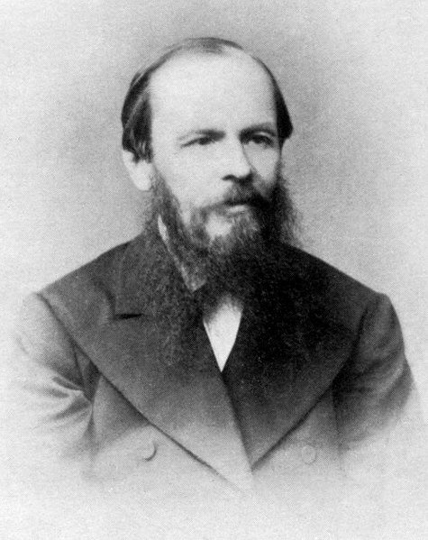

Breve Biografía del Escritor

Fiódor Mijailovich Dostoievski nació el 11 de noviembre de 1821 en la ciudad de Moscú, en el seno de una familia acomodada. Su madre murió cuando aun era joven a causa de una tuberculosis. Tras este acontecimiento trágico, se mudó a San Petesburgo, donde ingresó en la Escuela Militar de Ingenieros. Fue allí donde empezó a sentir una afinidad muy especial por la literatura, y comenzó a escribir sus primeras obras. Hay algo que muchas personas desconocen acerca del literato ruso, y es que sufría de epilepsia. Además, el fallecimiento de su padre, un hombre déspota y violento, casi le hizo perder la razón. Sin embargo, Dostoievski supo hacer frente a las circunstancias, y dotó a los personajes de sus obras de sus propios sentimientos, pensamientos y emociones. Su vida no fue fácil. Su primera esposa murió, así como su hermano y su primera hija con Ana Grigorievna, la mujer con la que compartió el resto de su vida. Fue a mediados del siglo XIX cuando Dostoievski se ganó una gran reputación como escritor gracias a la novela "Pobres gentes", muy aplaudida tanto por el público como por la crítica. Sin embargo, su notoriedad duró muy poco tiempo, en parte debido a que fue condenado a muerte por colaborar con grupos revolucionarios y liberales en la Rusia zarista. Apenas minutos antes de su ejecución la orden fue revocada por el mismo zar quien conmuto su pena a cuatro años de trabajos forzados en una cárcel de Siberia. Cuando salió de prisión, volvió a ganarse la fama con la obra "Recuerdos de la casa de los muertos". Tras ella, se mantuvo en la cresta de la ola con "Memorias del subsuelo", "El jugador" y, finalmente, "Crimen y Castigo", considerada una de las novelas más influyentes de la literatura rusa a nivel internacional. Esta obra terminó por definir el estilo propio de Dostoievski, cuya principal seña de identidad era la psicología. Sus demás obras: "El idiota", "Los Demoniados", "Diario de un escritor", "El adolescente" y finalmente su obra culmen "Los hermanos Karamazov" le dieron el broche de oro a la carrera del escritor ruso. Muere en el año 1881 motivo de una hemorragia pulmonar.